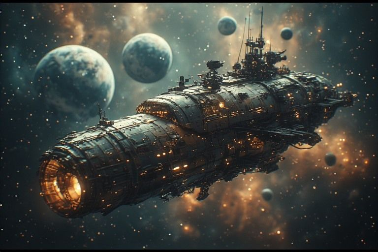

Engine Room
Interactive baby apps. PID, psychrometric, delta-T, IAQ.
In the live ship these were runnable simulators; this static edition describes them.

Tva's domain. four interactive systems online.
Ship's systems
Tva's four instruments, built in Episode 30: small interactive simulators of real HVAC ideas. They need a script to run, and this site runs none, so here they are only described.
- PID Tuning Console: The feedback loop that keeps the reactor stable.
- Psychrometric Chart: Air properties. Temperature, humidity, enthalpy.
- Delta-T Calculator: Temperature differential across heat exchangers.
- IAQ Monitor: Indoor air quality. CO2, VOC, particulates.
Dispatches from this station
- Episode 5: The Symbol Table Reusable components. The armory is born.
- Episode 9: The JACE Pipeline Tva built the engine room. Hope it's actually safe.
- Episode 11: The Ancillary Manifesto Tva and Durga codified engineering philosophy. With grumbling.
- Episode 13: The Hub The central control panel is... central. Shocking, I know.
- Episode 24: The Three Laws Principles emerged from pooled weapons. Someone should worry.
- Episode 29: The Harvest Two programs found common ground. Symbols learned their names.
- Episode 37: The Validator Built a forensic tool that cracks open Niagara graphics files and reads the wiring inside. First person to map the format without vendor documentation.
Echoes from other rooms
- Episode 36: The Skin of the Ship 42 textures. Hover-reveal backdrops. A font slider called OPTICS. And the ship started meditating on paradox between whispers.
Penny's margin notes
- Tva hasn't spoken a full sentence in two days. This is either very good or very bad.
- Four interactive systems online. Tva built them. He won't call them 'apps.' He calls them 'instruments.'
- The PID simulator is more honest than most conversations on this ship.
- Durga tested the fire suppression system again. It still works. She still doesn't trust it.
- The psychrometric chart doesn't lie. The air knows what temperature it wants to be.
- Delta-T is just subtraction. Tva will fight anyone who says that out loud.
- Someone left the IAQ monitor running overnight. The CO2 readings told a story about three AM coding sessions.
- Tva's code is clean. His workshop is not. There is no contradiction here.